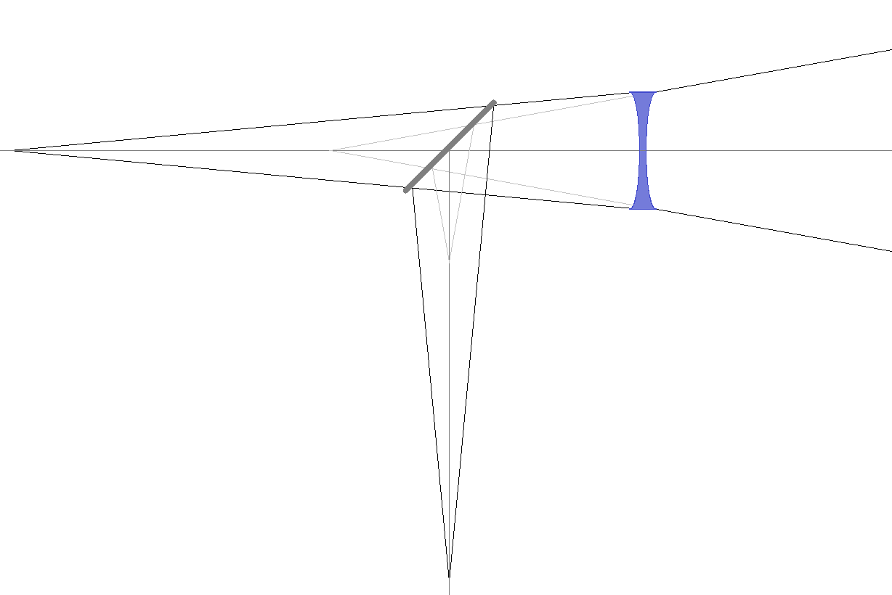
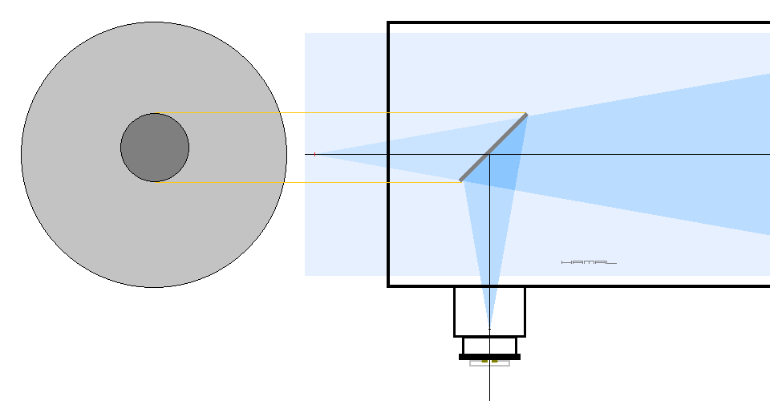
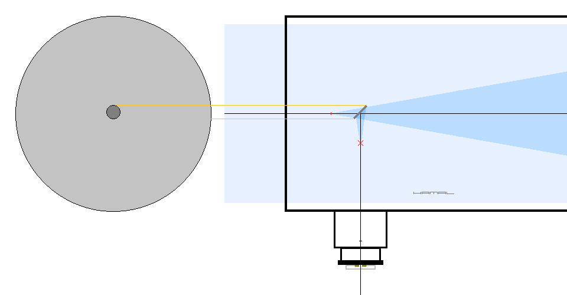
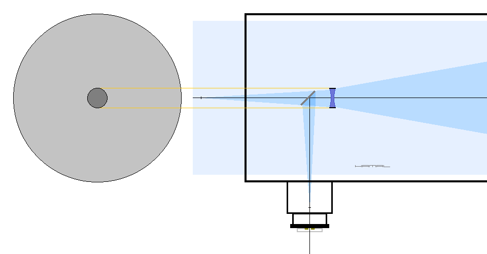
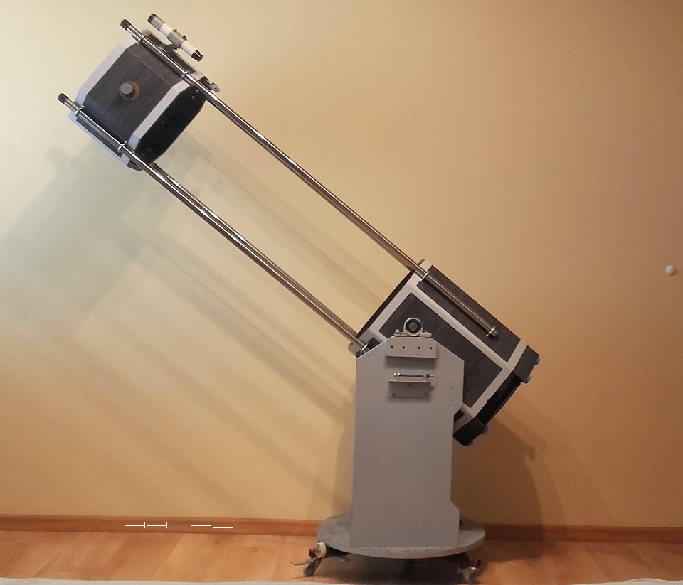
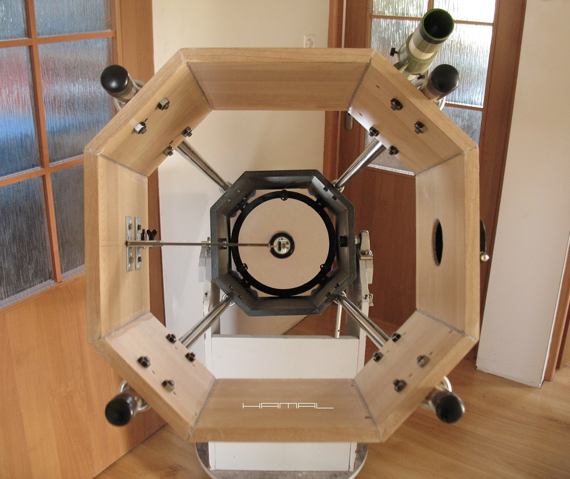
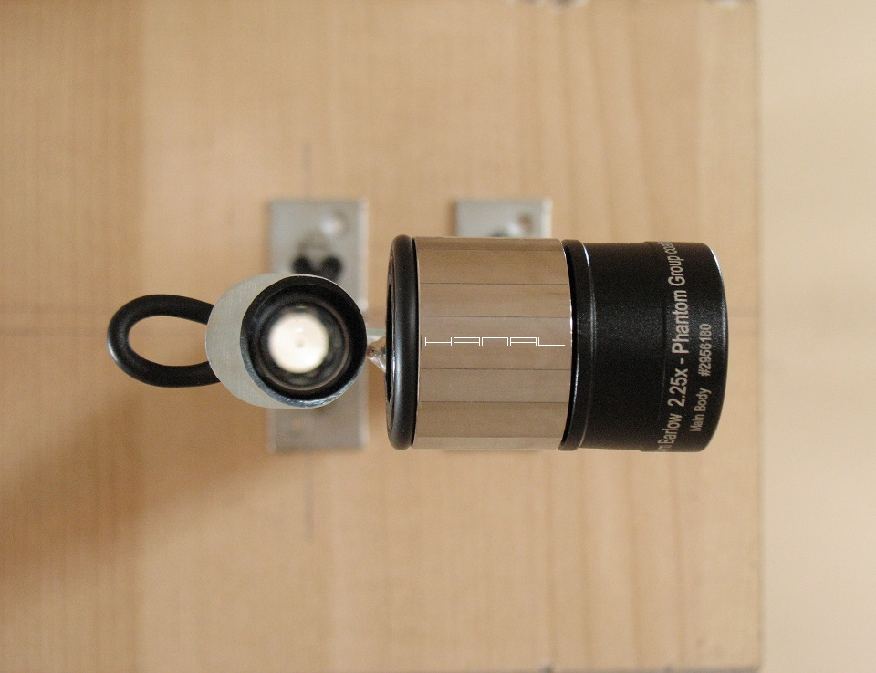
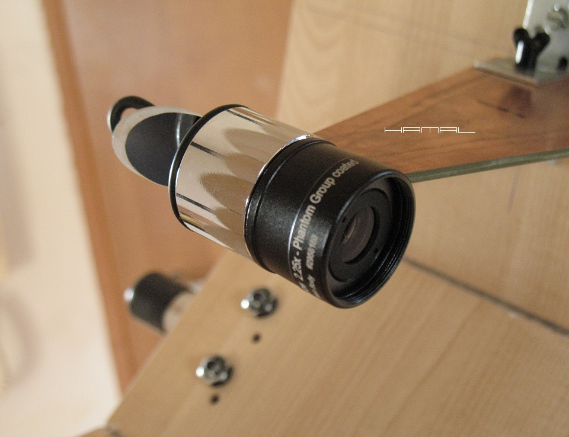

.
ZMODYFIKOWANY TELESKOP SYSTEMU NEWTONA
MINIMALNA OBSTRUKCJA
|
OPIS KONCEPCJI . Teleskop systemu Newtona sprawdza się doskonale w obrazowaniu planet i Księżyca, ale głównym czynnikiem obniżającym sprawność tego układu optycznego jest znaczna obstrukcja powodowana przez duże zwierciadło wtórne. Wielu wielbicieli astrofotografii planetarnej próbując obejść ten problem, instaluje najmniejsze możliwe zwierciadło wtórne, dochodząc do momentu, gdy tylko środek małego sensora kamerki planetarnej, jest obsługiwany przez całe zwierciadło główne. Takie rozwiązanie powoduje spore winietowanie w okularach obserwacyjnych, ale one w tym przypadku służą jedynie do namierzania obiektów. Ta koncepcja posiada jednak ograniczenie wynikające z faktu, iż nadal operujemy w dość szerokim rejonie stożka światła. Jest jednak rozwiązanie pozwalające zejść jeszcze niżej z rozmiarem zwierciadła wtórnego, a polega ono, na umieszczeniu soczewki Barlow-a przed zwierciadłem wtórnym, które wtedy kieruje do wyciągu okularowego już wydłużony przez soczewkę Barlow-a wąski stożek światła. Operujemy wtedy w miejscu, gdzie stożek światła jest bardzo wąski, więc i średnice stosowanej optyki mogą być znacznie mniejsze. Ale i tu natrafimy na kolejne ograniczenie. Wyznacznikiem minimalnej średnicy krążka obstrukcji stanie się dostępna średnica oprawy zastosowanej soczewki Barlow-a. W przypadku optyki w oprawie 1,25" będzie to średnica 31,75mm. Można oczywiście próbować pozyskać optykę w oprawie 1", czyli 25,4mm, lub wyjąć soczewki z fabrycznej oprawy 1,25" i osadzić je w wykonanej na wymiar najmniejszej możliwej tubie, ale na razie skupimy się na rozwiązaniu bardziej dostępnym. W teleskopie klasycznego systemu Newtona posiadającym zwierciadło główne o średnicy 320mm średnica zwierciadła wtórnego wynosi około 70mm, a do tego powoduje niesymetryczną obstrukcję (Offset). Przy chęci zastosowania przysłony symetrycznej obstrukcji centralnej średnica okręgu wyniesie około 80mm, jak więc widać, wartość symetrycznej obstrukcji centralnej wynoszącej około 32mm jest godna pożądania. OPIS BUDOWY . Do stworzenia prototypu postanowiłem wykorzystać skonstruowany wcześniej teleskop Trus 320/1500, ponieważ posiadał on wystające z przodu nadmiarowe rury konstrukcyjne, które posłużyły za szynę montażową, dla zbudowanej dedykowanej nowej skrzyni górnej, zawierającej zwierciadło wtórne, soczewkę Barlow-a i wyciąg okularowy. Kolejnym wyzwaniem było, wybranie odpowiedniej soczewki Barlow-a, a musiała ona spełniać jedno bardzo ważne kryterium, mianowicie posiadać bardzo niski przyrost krotności w odniesieniu do znacznego zwiększania głębokości jej osadzenia w torze optycznym. Warunek taki spełnia soczewka Barlow-a Baader Hyperion Zoom Barlow 2.25x, która przy okazji posiadając dobre opinie użytkowników, gwarantuje dobrą jakość optyki, co w przypadku stosowania soczewek Barlow-a o małej krotności na długim dystansie, ma duże znaczenie, ponieważ obraz przebywa znaczną odległość, zanim trafi na matrycę kamerki i ma wiele czasu, aby ujawnić wszelkie wady, potęgując tym samym każdą niedoskonałość soczewki Barlow-a w odniesieniu do rozmiaru piksela, co nie ma miejsca w przypadku krótkich soczewek Barlow-a, których zwolennikiem jestem. Kolejna sprawa to pozyskanie dobrej jakości, małego zwierciadła wtórnego i tu z racji posiadania już takowego wymontowanego z teleskopu Bresser Junior 76/350 Dobson, postanowiłem do prób jego użyć. Nie liczyłem na to, że optyka z tak lichego sprzętu będzie dobrej jakości, przypuszczałem, że zajdzie konieczność wymiany po pierwszych próbach, okazało się jednak, że miałem niebywałe szczęście i trafiłem na dobry egzemplarz. Potem już tylko sporządziłem plan wymiarów oraz wszelkich odległości i przystąpiłem do pracy. Następnym etapem było zgranie wszystkich elementów, co stanowiło spore wyzwanie, ponieważ zastosowanie soczewki Barlow-a w tym, a nie innym miejscu, narzuca dodatkowe rygorystyczne wymagania co do jakości kolimacji, a nawet i samego sposobu jej przeprowadzania, gdyż należało wypracować nowe techniki i procedury dla jej wykonania. Teleskop jest dłuższy od Newtona o klasycznym układzie, przez co mniej poręczny, jednak kiedy patrzy się na uzyskiwane przez niego obrazy, czuć moc, której klasyczny układ mimo zastosowania tego samego zwierciadła głównego, nie dawał. I choć różnice nie są mocno spektakularne, a teoretyczne rozważania i wykresy sugerują, że powinny być jeszcze mniejsze, to w czasie swojego użytkowania zwierciadła o średnicy 320mm z zastosowaniem różnego rozmiaru obstrukcji zwierciadła głównego oraz prób z kartonowymi krążkami o różnej średnicy, zauważyłem, że jednak rozmiar obstrukcji centralnej ma większe znaczenie, niż powszechnie przyjęło się uważać, stąd poświęcony czas i wkład pracy w zbudowanie opisanego tu teleskopu. Dlaczego zastosowałem prymitywny jednołopatkowy uchwyt piasty pająka? Dlatego że: - 4 łopatki pająka to 8 kolców dyfrakcyjnych, nakładających się na siebie w 4 kolce, - 3 łopatki pająka to 6 kolców dyfrakcyjnych, - 2 łopatki pająka to 4 kolce dyfrakcyjne, nakładające się na siebie w 2 kolce, - okrągły uchwyt to 3,14 długości rozmytej dyfrakcji (2x1,57), - 1 łopatka pająka to 2 kolce dyfrakcyjne, Uznałem więc, że najmniejszą długość generującą dyfrakcję uzyskam, stosując jedną łopatkę pająka, gdy dodać do tego, że na planetach tych 2 kolców i tak nie widać, a okrągły uchwyt wprowadzi nam otoczkę dookoła tarczy, nie ma już najmniejszych wątpliwości, że jednołopatkowy uchwyt jest tym najbardziej optymalnym. Minimalna wartość ogniskowej zależy od przyrostu krotności soczewki Barlow-a w odniesieniu do odległości od ogniska teleskopu oraz od średnicy zwierciadła głównego, która determinuje nam rozmiar tubusu teleskopu i odległość od osi optycznej zwierciadła głównego do płaszczyzny ogniskowania w wyciągu okularowym. Minimalna ogniskowa nie może być mniejsza niż wypadkowa przywołanych zależności. Mamy jednak wpływ na maksymalną ogniskową, jednak przesada w tym zakresie nie jest wskazana z uwagi na dążenie do optymalnych parametrów skali obrazowania. Wstępnych pomiarów dokonałem z użyciem teleskopu 320/1500, ułatwiło mi to potem prace projektowe przy ogólnych wartościach podstawowych parametrów poszczególnych elementów. Ostatecznie ognikowa mojego teleskopu wnosi 9200mm i jest to wartość optymalna dla mojego zestawu. Stosując bardzo małe zwierciadła wtórne, należy pamiętać, iż powinny być one nienagannej jakości i czystości, ponieważ, pyłek kurzu wielkości 1mm, na zwierciadle głównym o średnicy 320mm, zasłania nam jedynie 1mm kwadratowy zwierciadła głównego. Pyłek wielkości 1mm na zwierciadle wtórnym o rozmiarze 64mm odpowiada przeszkodzie na zwierciadle głównym o rozmiarze 5mm. Pyłek wielkości 1mm na zwierciadle wtórnym o rozmiarze 10mm odpowiada przeszkodzie na zwierciadle głównym o rozmiarze 32mm, bo przecież na powierzchni 10mm zwierciadła wtórnego, skumulowane jest całe nasze 320mm zwierciadło główne. Zarys ogólny toru optycznego.  Klasyczny układ zwierciadła wtónego w teleskopie systemu Newtona. Typowy rozmiar obstrukcji dla takiego układu.  Efekt użycia jedynie zmniejszonego zwierciadła wtórnego na szczycie stożka ogniskowania. Ognisko zwierciadła wypada wewnątrz tuby teleskopu.  Wydłużenie szczytu stożka przy użyciu Barlow-a i uzyskanie miejsca ostrzenia na wysokości wyciągu okularowego przy użyciu małego rozmiaru zwierciadła wtórnego, a jednocześnie planetarnej ogniskowej bez konieczności stosowania już dodatkowej optyki.  Teleskop modyfikowanego systemu Newtona 320/9200mm (pomalowany i oklejony).  Widok od przodu tuby.  Soczewka Barlow-a oraz zwierciadło wtórne.  Baader Hyperion Zoom Barlow 2.25x.  Do pobrania tutaj fimik z Jowiszem z wyżej prezentowango teleskopu oraz ASI120M-Mod. 
|